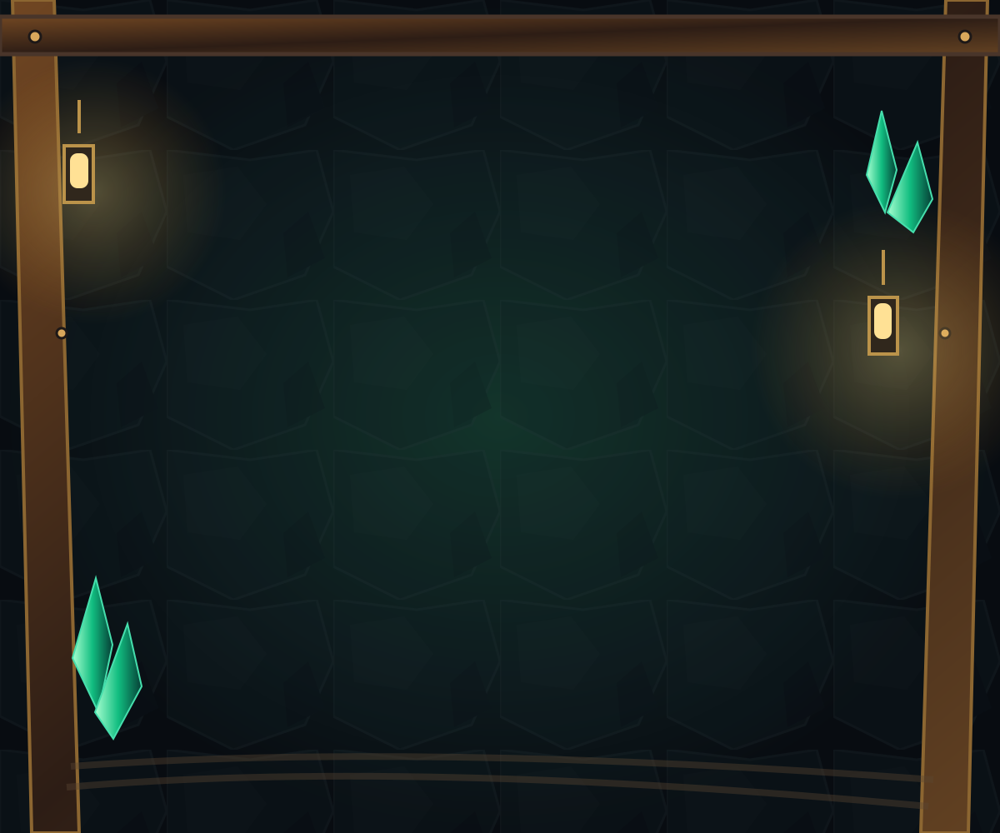

Light-revealed windows · 14 outcome variants
Review the information boundary and dashed-window treatment. All positions remain covered and unresolved. Light reveals the type, not a payout or an excavation. Metal still needs excavation before a matching pickaxe.
Confirmation and feedback
260,000 DIG · 250 future eligible covered positions. Digging sold separately. NO REFUNDS. Unused uses carry forward. Activation, timing, utilization and profit are not guaranteed.
Confirm and Cancel are separate 44px controls in the gameplay dialog. This review sample cannot make a purchase.
Your balance is too low for this purchase. Nothing was charged and no inventory was consumed.
You can play this temporary session, but new progress will not be saved. Existing saved rights are retained.
Integrated approved originals
Approved animation sequences
Original atlas pixels, frame order and durations. Playback cannot award rewards.
New work awaiting review
NOMO Dynamite Run
New run, planting, fuse, blast and discovery animation using the exact approved Special Tools character pixels. No new character design. Review in the game: Special Tools → NOMO Dynamite Run → select two untouched adjacent rows → confirm 0.05 simulated NOMO. Skip and reduced motion supported.
Play and review the cutsceneNew cavern surround

NEW WORK · decorative only; original mining board remains unchanged.
The game also previews new tool strikes, bounded debris, scan glows, descent motion, opt-in impact sounds and Mythic interface cards. These are presentation work, not approved original sequences or economic rules.
Original artwork status
Checking verified source bindings…
Only verified originals appear in the approved gallery. Newly authored work and recovered pending-review candidates stay separate. This gallery does not approve a new character, token emblem, shovel or animation.